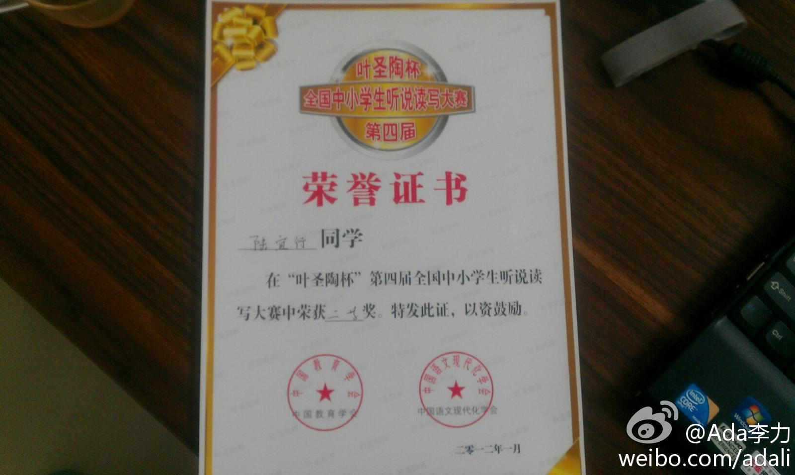

公司用的Beehive办公系统, 官方文档支持的手机终端类型只有: iPhone, Blackberry, Windows Mobile 和 WebOS. 如果是Android系统, 要安装Beehive的IM和邮件客户端到手机上, 这里有个参考: 网页链接
姣姣从学校带回个奖状，第四届叶圣陶杯全国中小学生听说读写大赛二等奖，接到老师的短信，姣姣班上同学几乎人人有奖。可笑的是，问了几个同学和家长，都不知道当初是怎么参加这个大赛，也不记得都为大赛做过什么。 